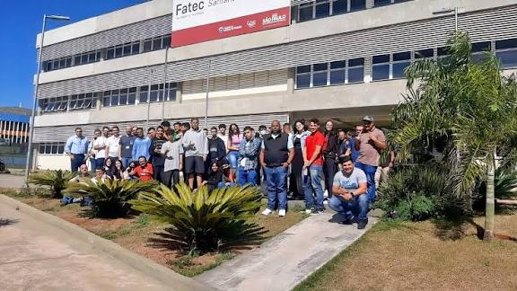
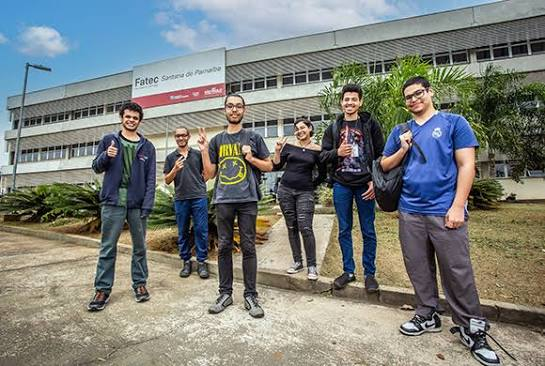
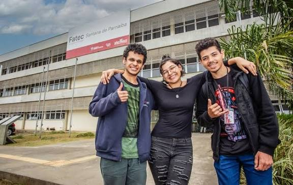
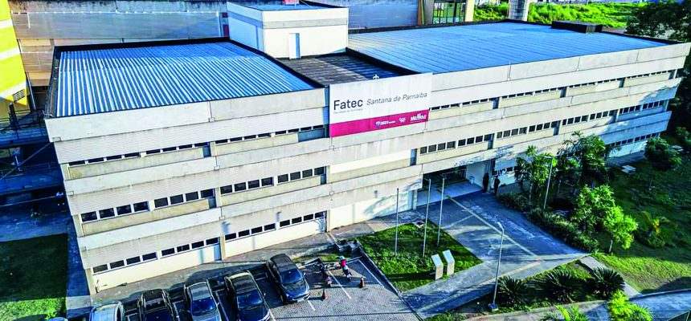

Sobre a Fatec Santana de Parnaíba
A Fatec Santana de Parnaíba é uma faculdade pública e totalmente gratuita reconhecida pela excelência no ensino tecnológico. Mantida pelo Centro Paula Souza, ela oferece cursos de graduação (tecnólogos) voltados para as demandas atuais do mercado de trabalho, com foco em tecnologia, dados e negócios.
Iniciou suas atividades em 2005, com o curso de Análise e Desenvolvimento de Sistemas, e desde então tem se destacado como uma instituição de referência na formação de profissionais altamente capacitados.
A unidade disponibiliza quatro cursos superiores de tecnologia, divididos entre os períodos da manhã e da noite.



